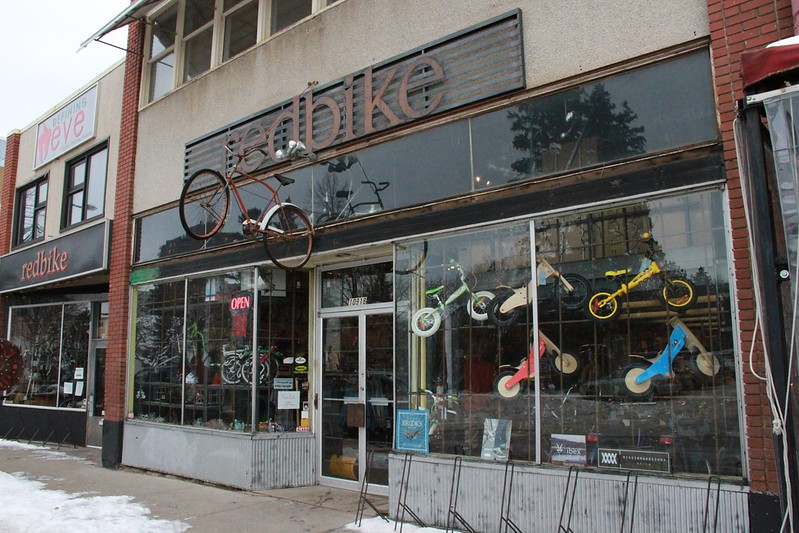
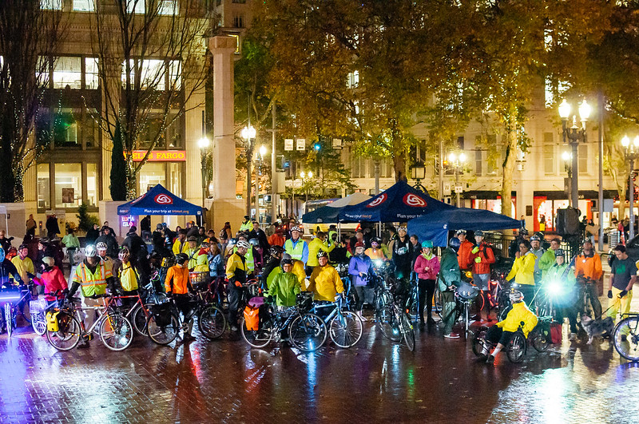

Tufts' Bicycle is the direct product of one man's obsession with bicycles. Since he was a young child, Timmy Tufts was always active--crawling, then walking, then running. His life changed one Christmas morning when, after being gifted a bicycle, he discovered the greatest art known to man: cycling.
Since that day, Timmy's sole mode of transport has been a bicycle. From trips to the store to making his way across town, Timmy eats, sleeps, and breathes cycling.

Upon the passing of Timmy's great-uncle Richard, and with a newfound inheritance beyond mortal comprehension, Timmy invested in a humble bike shop--and thus began Tufts' Bicycle.
Now, almost two decades later, Tufts Bicycle hosts an impressive inventory of over one thousand bicycles. Servicing bicycle enthusiasts nationwide, Tufts' Bicycle has grown from a small town bicycle retailer to a nationwide community of cyclists.

Tufts' Bicycle hosts the annual Pedal for Peace ride, which has been nominated for multiple Nobel Peace Prizes. Through it all, Timmy's love for cycling has continued to flourish. With every bicycle sold, Tufts' Bicycle donates fifty percent of the profit to Timmy's Tots, a charity which introduces cycling to children in need.
Rolling forward, Tufts' Bicycle has goals to expand internationally, with sights of becoming the world's foremost source for all things bicycles.
Each bike sold guarantees a happy, healthy, and heartening time.